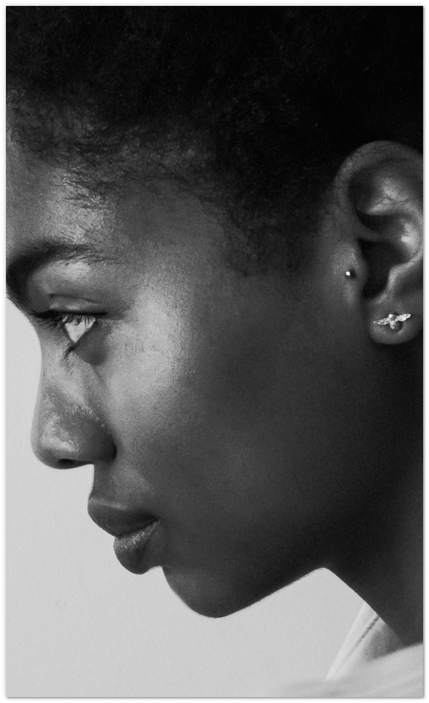

My Journey to UX Design
I enjoy working on projects that address essential client and user needs while creating humanized user-friendly interfaces that can be accessed by many.

I enjoy working on projects that address essential client and user needs while creating humanized user-friendly interfaces that can be accessed by many.
My name is Jordyn Roberts, and I’ve never been one to believe in coincidences. I could blame my Southern, spiritual upbringing or my obsession with The Lion King during my rugrat years, but as far as I recall I have always perceived reality as an interconnection of things. Every instant and every detail affects an outcome. Every action triggers a change and what we do with the consequences of these changes determine how better, or worse, the world is for it. This outlook – partnered with my curiosity, desire to be an advocate for humanity, appreciation of the arts and joy of storytelling – coaxed me into pursuing dual degrees in journalism and graphic design. My goal was to, somehow, combine these disciplines and forge a path to a career that best aligns with my character and passion.
In my quest to seek the previously mentioned character and passion alignment, I decided to take a leap of faith and pursue the perfect career for someone with my interest - UX design. Thanks to a couple of educational opportunities provided by Bloc and Udacity, I am closer to becoming a designer that contributes to the production of goods and services made for the betterment of humanity and a prosperous future for all.
I stumbled upon the concept of design in my childhood. Often inspired, I was reliant on my resourcefulness to maintain an endless roster of entertainment for myself through constant creation. My habit of making what I could out of arbitrary items and the enjoyment I found in fixing things led my mother to believe her wild, wild, tinker child would become an engineer or architect.
"You were always fixing stuff,” she told me. “You were always taking things apart and putting them back together."
If I hadn't developed a love for the arts, and if mathematics wasn't so trying, either of the two paths may have become my future. Instead, I grew up assuming I was fated t the arts, exclusively, and thrived in creative environments that gave me room for experimentation and let me explore the human condition.
-While applying to colleges, I was stunned by the financial reality of attending art school and, after doing some self-reflection and research, decided to pursue a degree in photojournalism. A big part of me still wanted to save the world, and I believed visual storytelling was the perfect medium for advocacy.
I applied to the University of Missouri and was accepted to their Journalism School to pursue a degree in photojournalism. Thanks to the school's dedication to hands-on learning, I soon discovered I was incompatible with the discipline after covering issues close to my heart. The idea of witnessing problems in the community but not taking a more preventative role bothered me. The frustration made me realize how much I wanted to fix problems, not just report them.
I decided to swap my major from photojournalism to strategic communications with an emphasis in art direction and apply to the graphic design program under the School of Arts and Science. After passing a portfolio review, I would spend the next few years as both a journalism and design student. It was a balancing act that paid off in the long run.
Thanks to having a readily available portfolio of graphic design work by my senior year, I had the opportunity of taking a mobile app development course through the journalism school. Journalism students with design experience were paired together and then grouped with computer science students from the engineering school to design and develop a mobile app for presentation at the RJI Tech Showcase at the end of the semester. The course gave me my first taste of whiteboard brainstorming, concept pitching, collaboration with programmers, and so much more. The experience was so exhilarating that I consider it a benchmark for career satisfaction to this day. It compelled me to research careers in product design. While skimming Youtube for answers, I came across a video in my recommendations – "What the #$%@ is UX Design?"
Did I just discover the career of my dreams?
I applied to different design internships and jobs after graduating with both my degrees, hoping for a chance to gain the exposure and experience I so desired. My first opportunity was a communications internship at a beauty and fashion public relations boutique. Midway through my internship I was hired as a full-time freelancer and did what I could to fulfill any need they had. If I didn’t know how to do something, I trained myself in my own time until I did. Graphic design, photography, copywriting, web design, customer service – I wore all the hats I could and tailored them as I grew.
Volunteering to take on a sundry of responsibilities in a work environment improved my skills in management and collaboration while forcing me to extend myself beyond my introversion. My will to improve overpowered my social anxieties, letting me grow fast and without confinement.
I resigned from my position after being granted scholarships and financial aid to enroll in two boot camps that would require my full-time attention. I had applied to Udacity’s Grow With Google (GWG) Scholarship Challenge in October 2017, was accepted, and after completing the 3-month challenge, I received a scholarship to Udacity’s 6-month Android Basics Nanodegree Program. Only a month after completing the GWG challenge (before I started the Nanodegree program) I began Bloc’s Design Apprenticeship Program to become job-ready for a career in UX design.
These opportunities were a blessing. At this period of my life, I was on the verge of becoming burned out and losing hope, assuming it would take years for me to be prepared to take on the responsibilities of a UX designer. While the job I had exposed me to numerous situations that contributed to my maturity as a designer and worker, I had to seriously question if I was moving forward in my career, moving backward, or moving at all.
I had to do some introspective thinking and reevaluate what I was doing with my life. I recalled the moments of my past that brought me joy and reminisced. Then, I asked myself:
Jordyn, who are you?
The answer:
I’m a UX designer.
I am not much of a risk taker, but abandoning routine and job security was a risk worth taking. Almost a year after jump starting my journey to chase the future I was naturally cultivated for, I am the happiest I have been in years. No longer a pixel pusher, I now find joy in producing projects with a purpose that allow me to thrive as a researcher, communicator, and designer.
A possessor of curiosities, imagination, and the desire to be a champion for humanity, I remain spirited in my search for opportunities to grow and apply my learnings to impactful projects – big or small – as a student of the world. If you’d like to work with someone with the previously mentioned characteristics, feel free to reach out! I'm only a message away.
Random Facts